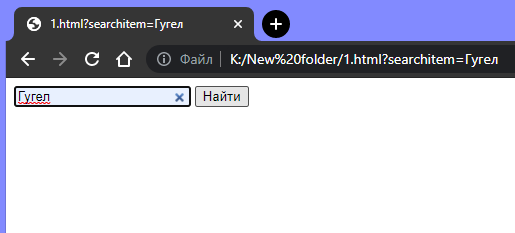
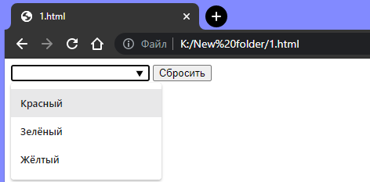

Прогресс завершения курса:
Создаём окно поиска
Новый тип поля ввода search служит для создания окна поиска:
<form>
<input name="searchitem" type="search">
<input type="submit" value="Найти">
</form>
Результат:

Не забудьте указать атрибут name для <input>; в противном случае ничего не будет отправлено.
Параметры поиска
Тег <datalist> может быть использован, чтобы задать список предопределённых параметров поиска:
<form>
<input id="car" type="text" list="colors">
<datalist id="colors">
<option value="Красный">
<option value="Зелёный">
<option value="Жёлтый">
</datalist>
<input type="reset">
</form>
Результат:

С помощью <option> создаются варианты выбора, которые будут предложены пользователю в выпадающем списке.
ID элемента <datalist> должен совпадать с атрибутом list в элементе <input>.